Turn live Odoo Accounting data into a boardroom-ready financial position report — Balance Sheet, Income Statement, KPIs — and let the AI provider of your choice turn those numbers into an executive summary, a financial health score, and specific, numbered recommendations.
Every figure is pulled directly from posted journal entries for the period and company you choose. No manual data entry, no spreadsheets to reconcile.
Claude, ChatGPT, Gemini, DeepSeek, and Grok are supported out of the box. Switch providers per report to compare how each one reads the same numbers.
When a vendor ships a new model, add it from the UI in seconds — no module update or code change required, ever.
The AI is explicitly prompted to surface data-integrity issues and financial red flags in their own dedicated section, separate from general advice.
Eight steps, from first-time setup to a finished, exportable analysis.
Under Accounting ▸ Configuration ▸ Settings ▸ AI Financial Advisor, pick a default provider, drop in the API key for each service you use, and click Test Connection to confirm it works before relying on it.
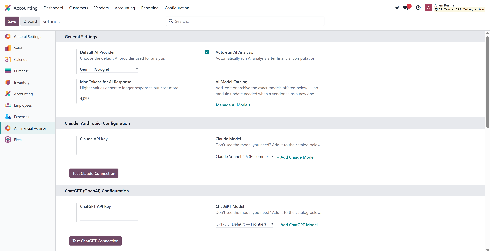
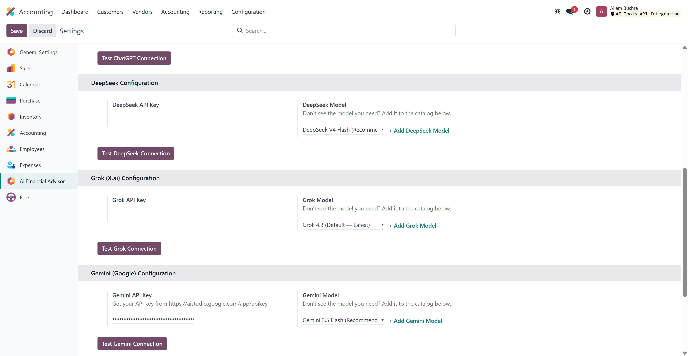
Every provider's model list lives in a simple, editable catalog — not hardcoded in Python. Add a brand-new model the day it's released, mark one as the default for its provider, and archive old ones you no longer want offered.
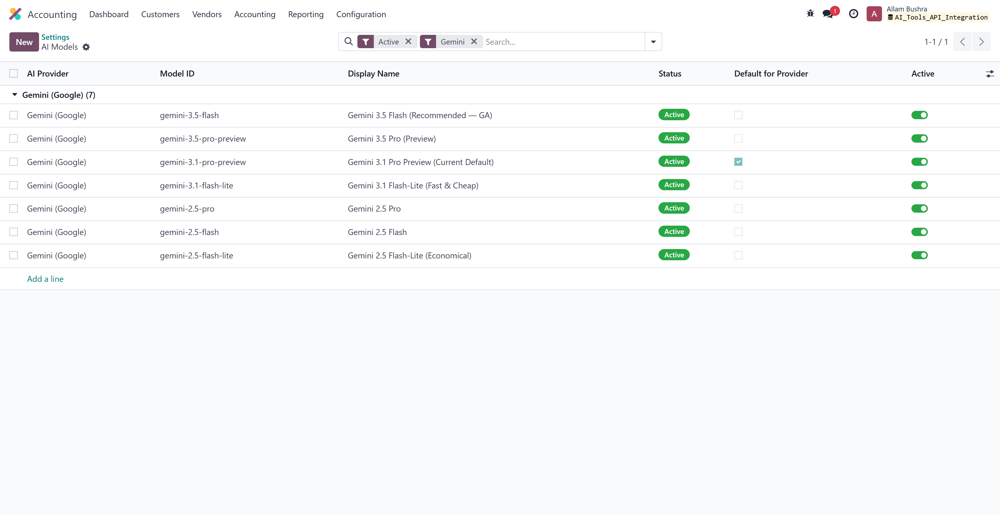
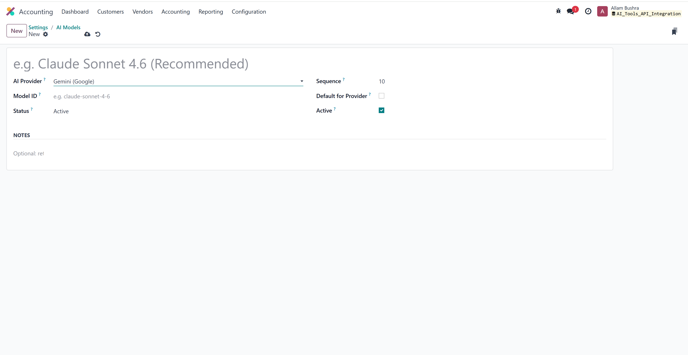
Reports are listed with their date range, company, provider, and status, so it's easy to keep a running history. Each report lets you pick any provider and any model from the catalog — perfect for comparing how Claude and Gemini read the same numbers.
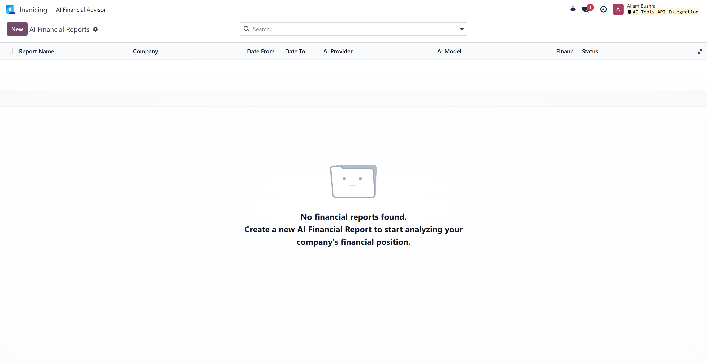
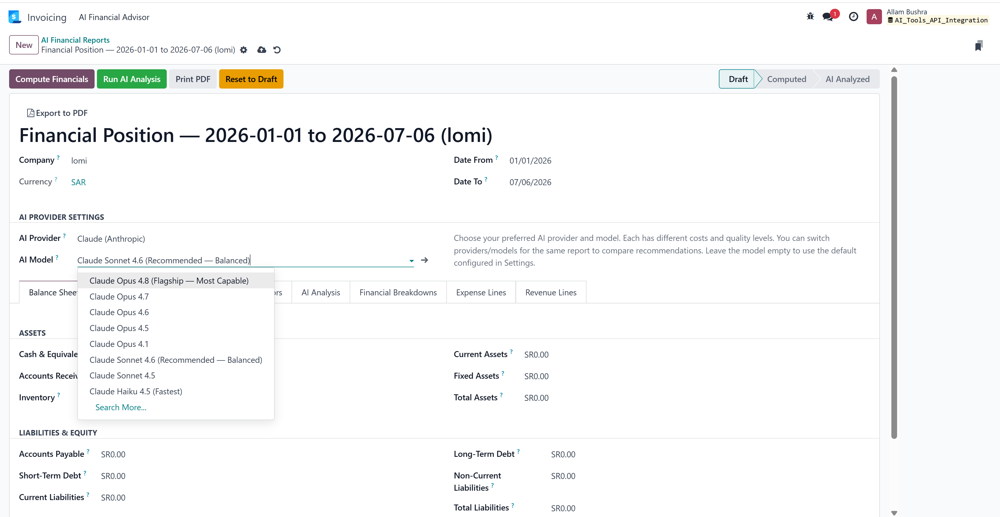
Cash, Accounts Receivable, Inventory, Fixed Assets, Payables, and Equity are all computed live from your posted entries, with Total Assets automatically balancing against Total Liabilities & Equity.
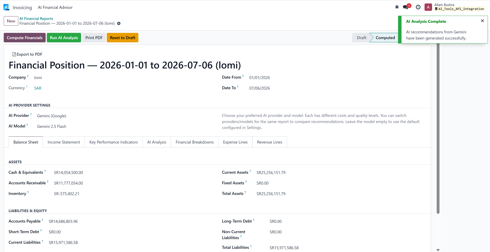
The Financial Breakdowns tab automatically ranks your top expense categories, revenue streams, and suppliers by spend — useful context on its own, and part of what the AI uses to ground its recommendations in your actual numbers.
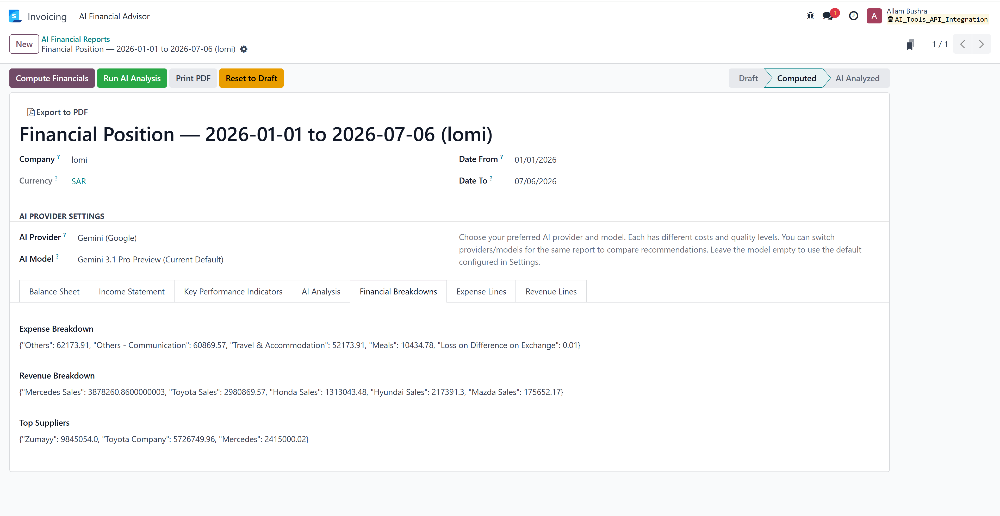
The report moves through Draft ▸ Computed ▸ AI Analyzed. Once analysis finishes, you get a 0–100 health score with a plain-language rating (Poor, Fair, Good, Excellent) at the top of the AI Analysis tab.
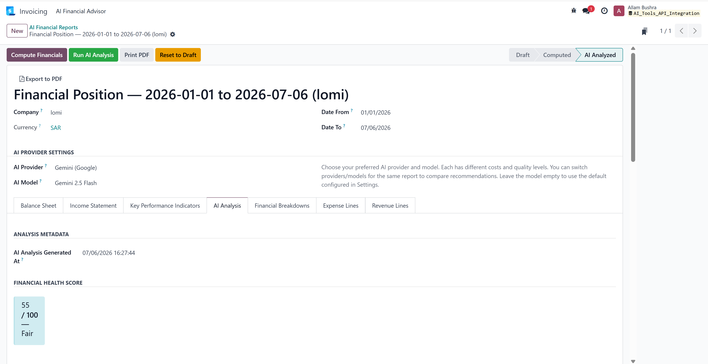
Below the executive summary, the analysis is broken into its own labeled sections: Income Increase, Expense Reduction, Purchasing Optimization, and Risk Alerts — each one referencing your real account names, suppliers, and figures rather than generic textbook tips.
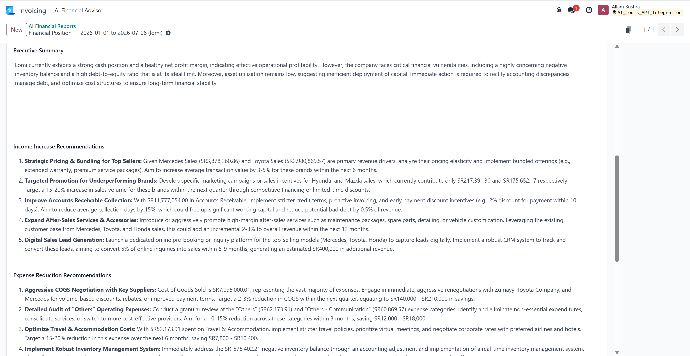
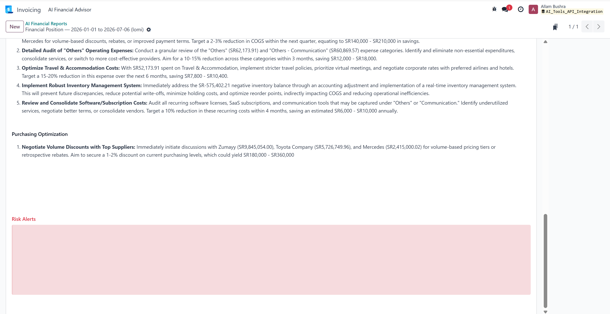
The red-highlighted Risk Alerts panel is where the AI is instructed to call out anything a controller would want flagged immediately — data-integrity problems, an unusually high debt-to-equity ratio, negative or implausible account balances, heavy concentration in a single customer or supplier, and similar red flags — kept visually separate from the growth and cost-saving suggestions above it.
From the report's action menu, choose AI Financial Position Report to generate a print-ready PDF with your own company letterhead and logo — Financial Health Score, Balance Sheet, Income Statement, and KPI table on the cover pages, followed by the full AI analysis with its Executive Summary, Income/Expense/Purchasing recommendations, and Risk Alerts — ready to attach to an email or a board pack.
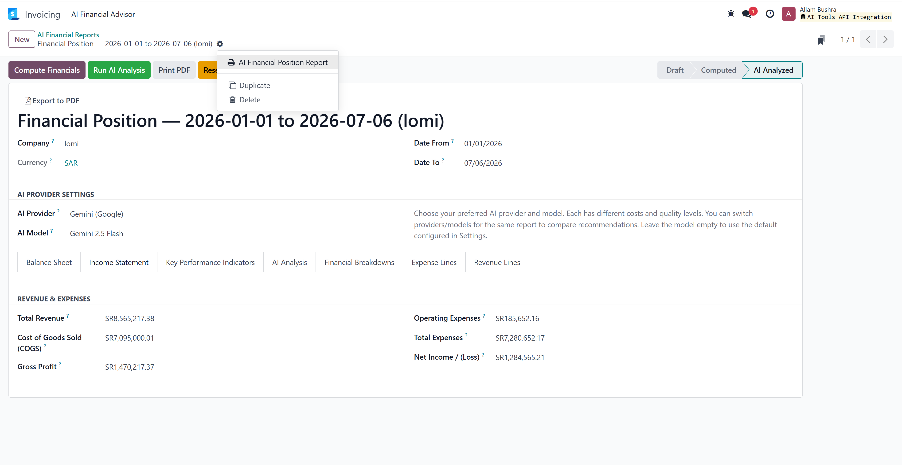
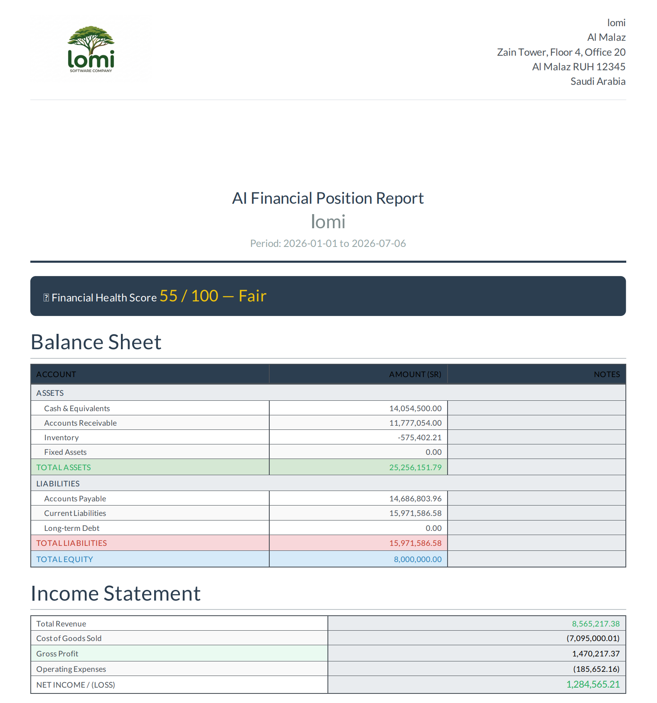
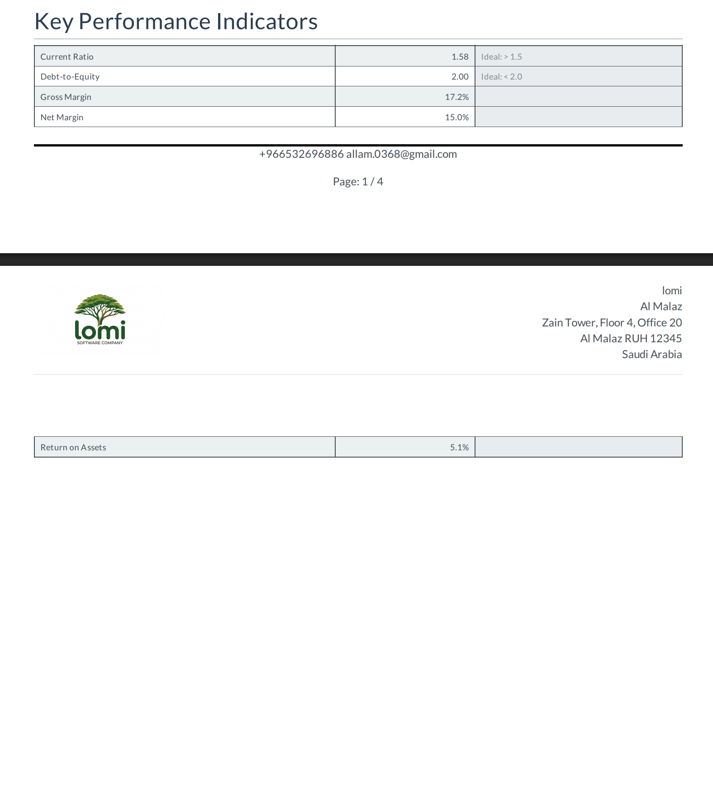
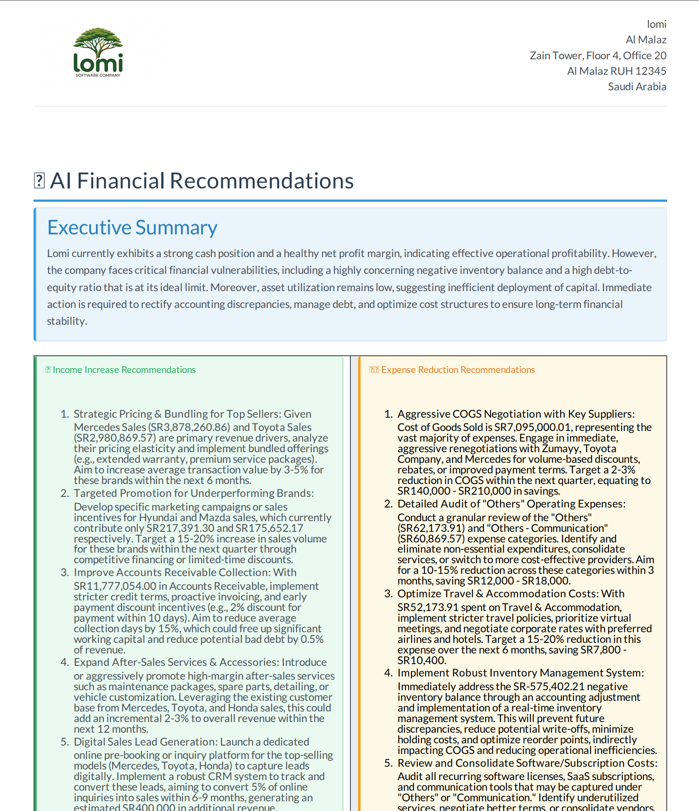
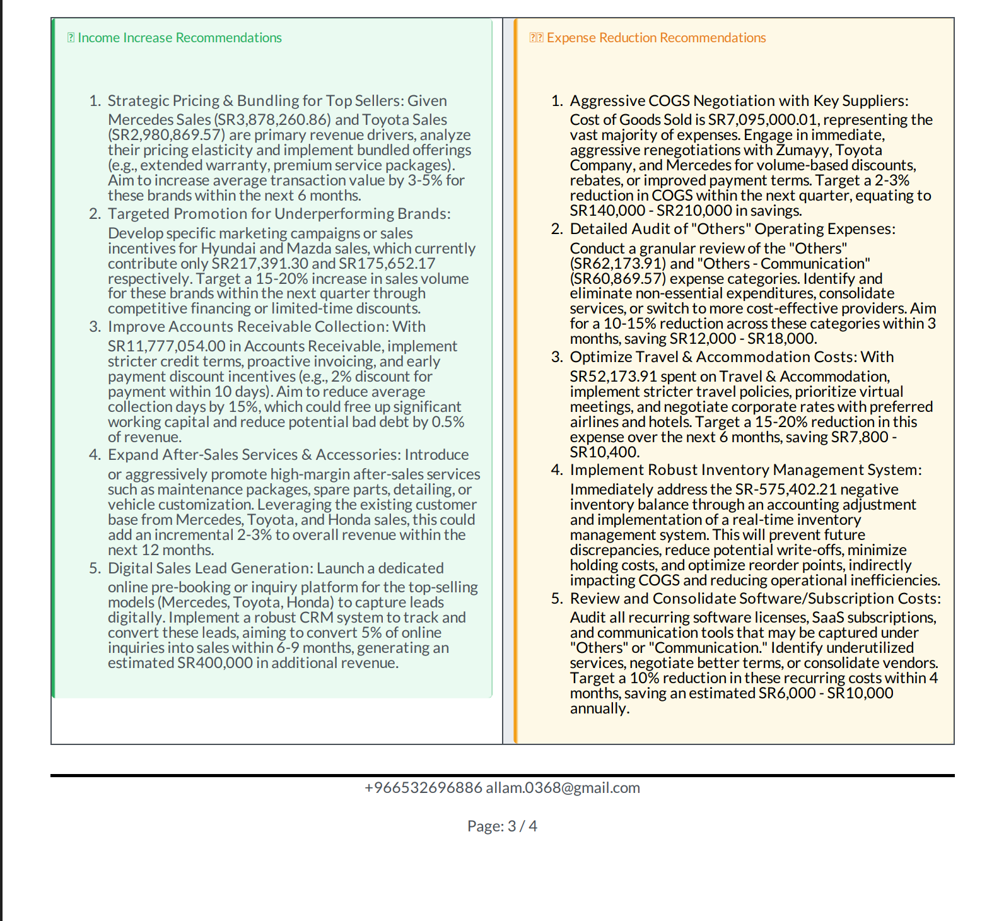